Chapitre IV — Statistiques descriptives
IV.1 Mesures de tendance centrale
Les mesures de tendance centrale permettent de résumer un ensemble de données par une valeur représentative. Il y a plusieurs manières, mathématiquement, de définir le "centre" d'une distribution de données, qui ont toutes leur utilité dans différents contextes. Les trois mesures les plus courantes, que nous allons étudier, sont le mode, la médiane et la moyenne.
IV.1.1 Mode
Le mode est la valeur (ou la modalité, ou la classe) qui apparaît le plus fréquemment dans une distribution.
Un magasin de vêtements a vendu au cours d'une journée les tailles suivantes :
Ce qui donne les comptes suivants :
| Taille | S | M | L | XL |
|---|---|---|---|---|
| Nombre vendu | 4 | 9 | 5 | 2 |
Le mode est donc la taille M, qui a été vendue 9 fois, soit plus que toute autre taille.
Attention, le mode n'est pas la fréquence la plus élevée, mais bien la valeur (ou la classe) associée à cette fréquence. Mathématiquement, le mode est toujours défini, quel que soit le type de données, mais pas forcément unique.
Formellement, s'il y a deux modes, ils devraient avoir une fréquence exactement égale.
En pratique, les données réelles sont rarement aussi parfaites, et on peut considérer qu'une distribution est bimodale si elle présente deux pics distincts, même si les fréquences ne sont pas exactement égales.
De la même façon, si le mode ne se distingue pas particulièrement et que toutes (ou au moins une grosse partie) ont des fréquences similaires, on pourra considérer la distribution comme amodale : sans mode.
On distingue ainsi plusieurs types de distributions selon le nombre de modes, illustrées par les exemples suivants.
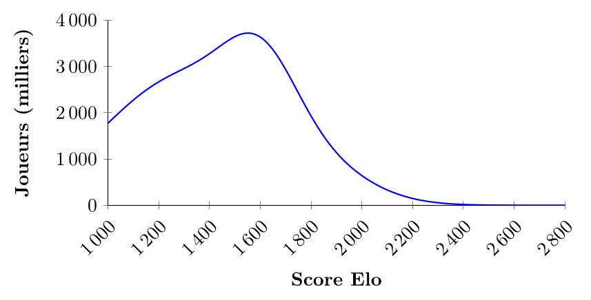
La figure ci-dessus illustre la distribution des scores Elo des joueurs d'échecs enregistrés auprès de la FIDE. On observe un pic prononcé autour de 1600 : cette distribution est unimodale, car elle présente un seul mode clairement identifiable.
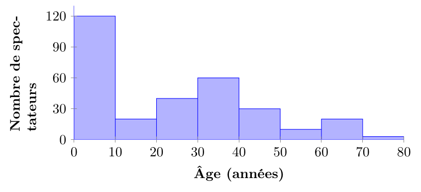
Dans cette figure, bien qu'une des valeurs soit clairement plus représentée que le reste, on peut raisonnablement identifier deux modes : la catégorie 0-9 ans (enfants) et la catégorie 30-39 ans (parents) : c'est probablement un film pour enfants qui sont accompagnés de leurs parents.
La distribution est donc bimodale, reflétant la présence de deux groupes d'âge distincts.
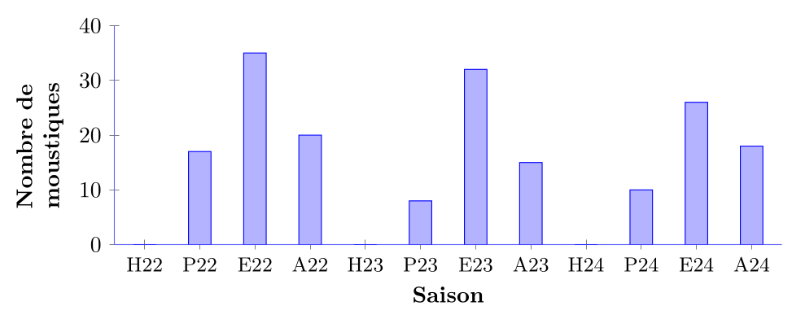
On voit dans cette distribution que tous les ans, la saison estivale (E) présente un pic marqué dans le nombre de moustiques écrasés, tandis que les saisons hivernales (H) montrent des creux. La distribution est donc multimodale, avec plusieurs pics récurrents chaque année correspondant aux saisons chaudes.
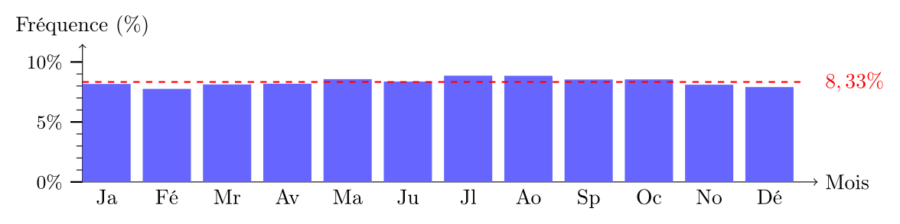
À titre indicatif, on représente en rouge la fréquence $1/12 = 8{,}33\%$. Dans l'exemple de la figure ci-dessus, la distribution est techniquement unimodale et le mode est le mois de juillet, qui a la fréquence la plus élevée. Cependant, la différence de fréquence entre juillet et les autres mois est relativement faible, et la distribution est assez plate. On peut donc considérer que cette distribution est amodale, car il n'y a pas de pic prononcé indiquant une préférence marquée pour un mois particulier.
-
Applicable à tous les types de variables (nominales, ordinales, quantitatives)
-
Peut ne pas exister ou ne pas être unique
-
Utile pour identifier les catégories ou valeurs les plus courantes
Interprétation du mode
Le mode est particulièrement utile pour les variables nominales, où les catégories n'ont pas d'ordre intrinsèque. Par exemple, dans une enquête sur la couleur préférée des voitures, le mode indiquerait la couleur la plus populaire parmi les répondants. De plus, le mode peut être utilisé pour identifier des tendances ou des préférences dans des ensembles de données qualitatives, comme les types de produits les plus vendus dans un magasin ou les destinations de voyage les plus populaires.
Dire que le mode d'une distribution de données $(x_i)$ est $M_o$ s'interprète comme :
Ceci est l'interprétation la plus basique possible. Ensuite, en fonction de valeurs de mode et du contexte des données, on peut en tirer des informations supplémentaires, comme on l'a fait pour l'âge des spectateurs dans la figure ci-dessus.
IV.1.2 Médiane
Pour les variables utilisant une échelle ordinale ou quantitative, on peut définir une autre manière de mesurer la tendance centrale : la médiane. L'idée est qu'on est au milieu s'il y a autant de valeurs en dessous qu'au-dessus, ce qui explique qu'on ne puisse pas l'appliquer à des variables nominales : on ne peut pas définir ce que veut dire "au-dessus" et "en dessous" pour des catégories sans ordre.
La médiane est la valeur qui sépare la distribution ordonnée en deux parties égales : 50 % des observations sont inférieures et 50 % sont supérieures.
Si on a une série de $n$ données nommées $x_i$, pour $i = 1, 2, \ldots, n$, la médiane se calcule de la façon suivante :
-
Ordonner les données du plus petit au plus grand : $x_{1} \leq x_{2} \leq \ldots \leq x_{n}$
-
Si $n$ est impair : $\text{Médiane} = x_{(n+1)/2}$
-
Si $n$ est pair : $\text{Médiane} = \dfrac{x_{n/2} + x_{(n/2)+1}}{2}$.
Attention : On utilise bien $n+1$ et pas $n$ dans la formule pour les données impaires.
En effet, si on a 5 données, la médiane est la $3^e$ valeur (et non pas la $2^e$ ou la $4^e$), ce qui correspond à $n+1$ divisé par 2.
En d'autres termes, si on a un nombre impair de données, la médiane est la valeur centrale une fois les données ordonnées. Si on a un nombre pair de données, la médiane est la moyenne des deux valeurs centrales.
Pour les notes d'un examen : 65, 73, 68, 85, 70, 78.
-
On ordonne les notes : 65, 68, 70, 73, 78, 85
-
Il y a 6 notes (pair), donc la médiane est la moyenne des $3^e$ et $4^e$ notes :
$$\text{Médiane} = \frac{70 + 73}{2} = 71.5$$
Pour les âges d'un groupe d'amis : 25, 27, 35, 30, 25.
-
On ordonne les âges : 25, 25, 27, 30, 35.
-
Il y a 5 âges (impair), donc la médiane est la $3^e$ valeur :
$$\text{Médiane} = 27$$
-
Robuste face aux valeurs extrêmes
-
Mesure de position centrale appropriée pour les distributions asymétriques
-
Applicable aux variables ordinales et quantitatives
Ce que l'on entend par "robuste face aux valeurs extrêmes" est que la médiane n'est pas affectée par des valeurs très élevées ou très basses. Par exemple, si dans un échantillon de 100 personnes, 99 ont un revenu de 50 000 \$ et une personne a un revenu de 1 000 000 \$, la médiane sera toujours de 50 000 \$, car la moitié des personnes gagnent moins que cela et l'autre moitié gagne plus. En revanche, la moyenne serait fortement influencée par le revenu élevé de cette seule personne.
Interprétation de la médiane
La médiane peut être interprétée comme le "point milieu" d'une distribution de données. Elle divise l'ensemble des observations en deux moitiés égales, ce qui en fait une mesure particulièrement utile pour comprendre la répartition des données, surtout lorsqu'il y a des valeurs extrêmes ou une asymétrie dans la distribution. Par exemple, dans le contexte des revenus, la médiane donne une idée plus précise du revenu "typique" d'une population, car elle n'est pas influencée par les très hauts revenus qui pourraient fausser la moyenne. Par ailleurs, contrairement au mode ou à la moyenne, par définition de la médiane, on sait toujours qu'au moins 50 % des données sont en dessous et 50 % au-dessus de cette valeur, ce qui est très utile si on veut par exemple mettre en place une politique sociale dont les détails dépendent du nombre de gens dont il faut s'occuper.
(Exemple fictif) Supposons qu'une université ait un budget de 1 000 000 \$ à distribuer pour soutenir les 1000 étudiants d'un certain programme. Si l'université décide de répartir son budget également entre tous les étudiants dont le revenu familial est inférieur à la moyenne des étudiants, il se peut qu'une première année la moyenne soit proche de la médiane et que chaque étudiant éligible reçoive environ 2000 \$. Cependant, si l'année suivante, un petit nombre d'étudiants très riches s'inscrit dans le programme, la moyenne pourrait augmenter considérablement, au point où 90 % des étudiants ont un revenu familial inférieur à la moyenne, ce qui donne une bourse de seulement 1111 \$ par étudiant éligible. Ainsi, si on se base sur la moyenne, les étudiants moins fortunés recevraient moins d'aide juste parce qu'il y a un petit nombre d'étudiants très riches inscrit dans le programme.
Pour éviter cela, l'université décide de donner des bourses au 50 % des étudiants les moins fortunés, ce qui garantit que chaque étudiant éligible recevra une bourse de 2000 \$ chaque année. Cependant, chaque étudiant individuel ne peut pas savoir s'il est éligible : il ne connait que son propre revenu familial, pas celui des autres étudiants. Ainsi, l'université décide de communiquer que tous les étudiants dont le revenu familial est inférieur à la médiane recevront la bourse1. Cela permet à chaque étudiant de savoir s'il est éligible ou non, sans révéler les revenus des autres étudiants. De plus comme la valeur de la médiane ne dépend pas de revenus de quelques étudiants très riches, le nombre de boursiers (et donc, le montant de la bourse) reste stable.
En pratique, dire que la médiane d'une distribution de données $(x_i)$ est $M_d$ s'interprète comme :
ou, de façon équivalente :
Comme avant, en fonction de la valeur de la médiane et du contexte des données, on peut en tirer des informations supplémentaires. Par exemple, si la médiane est très basse par rapport à la moyenne, cela peut indiquer que la distribution est fortement asymétrique avec une longue queue à droite, ce qui est souvent le cas pour les revenus.
La médiane de revenus individuels après impôts au Québec en 2022 est de 39 000 \$2. Cela signifie qu'en 2022, au moins 50 % des individus au Québec avaient un revenu après impôts inférieur ou égal à 39 000 \$. En d'autres termes, en 2022, 1 personne sur 2 au Québec gagnait moins de 39 000 \$ par an après impôts. Par contraste, la même source indique que le revenu moyen individuel par personne en 2022 était de 44 500 \$ : la majorité des gens gagnent moins que la moyenne.
IV.1.3 Moyenne
Si les données sont quantitatives, et donc sont mesurées sur une échelle d'intervalle ou de ratio, on peut définir une autre mesure de tendance centrale : la moyenne.
La moyenne d'une série de $n$ données $x_1, x_2, \ldots, x_n$ est la somme de toutes les valeurs divisée par le nombre total d'observations.
$$\frac{1}{n}\sum x_i = \frac{x_1 + x_2 + \cdots + x_n}{n}$$
Le symbole $\sum$ (sigma) représente l'opération de sommation : $\sum x_i$ se lit "la somme de toutes les valeurs $x_i$".
On note la moyenne de la population par la lettre grecque $\mu$ (mu) et la moyenne de l'échantillon par $\bar{x}$ (x-barre).
Moyenne de la population :
$$\mu = \frac{1}{N}\sum_{i=1}^{N} x_i$$
Moyenne de l'échantillon :
$$\bar{x} = \frac{1}{n}\sum_{i=1}^{n} x_i$$
Pour distinguer les deux, on appelle souvent moyenne empirique ou expérimentale la moyenne de l'échantillon $\bar{x}$, et moyenne théorique la moyenne de la population $\mu$.
Il existe d'autres quantités que l'on appelle aussi "moyenne" comme la moyenne géométrique. Cependant, par défaut, le terme "moyenne" fait référence à la moyenne arithmétique définie ci-dessus.
Pour les notes d'un examen : 65, 72, 68, 85, 70, 78
$$\bar{x} = \frac{65 + 72 + 68 + 85 + 70 + 78}{6} = \frac{438}{6} = 73$$
On peut interpréter la moyenne comme le "centre de gravité" de la distribution des données.
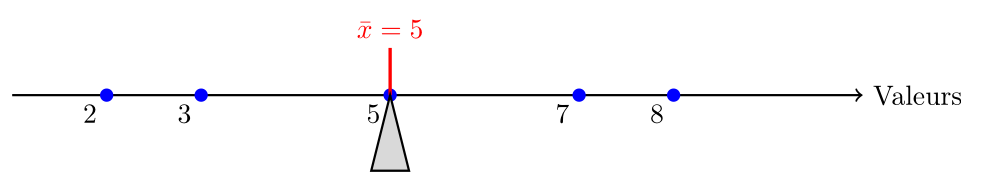
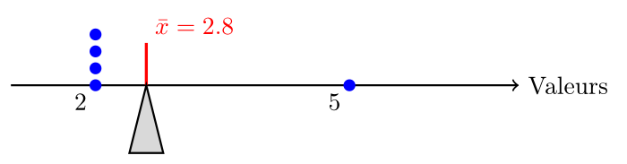
La somme des distances signées entre chaque valeur et la moyenne est toujours nulle :
$$\sum_{i=1}^{n} (x_i - \bar{x}) = 0$$
Démonstration. En effet,
$$\begin{aligned} \sum_{i=1}^{n} (x_i - \bar{x}) & = \sum_{i=1}^{n} x_i - \sum_{i=1}^{n} \bar{x} = \sum_{i=1}^{n} x_i - n \bar{x} \\ & = \sum_{i=1}^{n} x_i - n \left(\frac{1}{n} \sum_{i=1}^{n} x_i\right) = \sum_{i=1}^{n} x_i - \sum_{i=1}^{n} x_i = 0 \end{aligned}$$
Ce qu'il fallait démontrer.
Imaginons que vous posez un bâton en équilibre sur votre doigt. Si vous mettez un poids sur le bâton, le poids fera tourner le bâton avec une intensité proportionnelle à sa masse et à la distance avec votre doigt (c'est pour cela qu'il est plus facile de porter un sac à dos près du dos qu'à bout de bras : le poids est le même, mais la distance est plus longue). En physique, on appelle cela le couple. C'est au sens de la propriété précédente que la moyenne est le point d'équilibre : si on place une masse sur un bâton pour chaque donnée $x_i$ la moyenne est le point où le bâton est en équilibre : le couple total des poids à gauche de la moyenne est égal au couple total des poids à droite de la moyenne.
Il se peut que les données soient regroupées en classes en fonction de la valeur de la variable dont on veut calculer la moyenne, chaque classe ayant une certaine taille. Dans ce cas, la moyenne se calcule en pondérant chaque valeur par sa fréquence.
(Données inventées) On a interrogé un millier de personnes sur le nombre de voitures dans leur foyer. Les résultats sont les suivants :
| Nombre de voitures | Nombre de foyers | Fréquence | Pourcentage |
|---|---|---|---|
| 0 | 150 | 0,15 | 15 % |
| 1 | 400 | 0,40 | 40 % |
| 2 | 300 | 0,30 | 30 % |
| 3 | 100 | 0,10 | 10 % |
| 4 | 40 | 0,04 | 4 % |
| 5 | 10 | 0,01 | 1 % |
| Total | 1000 | 1,00 | 100 |
On peut calculer la moyenne du nombre de voitures par foyer comme suit, à partir des effectifs de chaque classe :
$$\begin{aligned} \bar{x} & = \frac{(0 \times 150) + (1 \times 400) + (2 \times 300) + (3 \times 100) + (4 \times 40) + (5 \times 10)}{1000}\\ & = \frac{0 + 400 + 600 + 300 + 160 + 50}{1000} = \frac{1510}{1000} = 1.51 \end{aligned}$$
À partir des fréquences relatives, le calcul devient :
$$\begin{aligned} \bar{x} & = (0 \times 0,15) + (1 \times 0,40) + (2 \times 0,30) + (3 \times 0,10) + (4 \times 0,04) + (5 \times 0,01)\\ & = 0 + 0,40 + 0,60 + 0,30 + 0,16 + 0,05 = 1,51 \end{aligned}$$
Enfin, si on fait le calcul à partir des pourcentages, il ne faut pas oublier de diviser par 100 à la fin :
$$\begin{aligned} \bar{x} & = \frac{(0 \times 15) + (1 \times 40) + (2 \times 30) + (3 \times 10) + (4 \times 4) + (5 \times 1)}{100}\\ & = \frac{0 + 40 + 60 + 30 + 16 + 5}{100} = \frac{151}{100} = 1,51 \end{aligned}$$
Il est rassurant de voir qu'on n'a pas cassé les maths et que les trois méthodes donnent le même résultat.
Cet exemple est en fait général. Non seulement on peut calculer la moyenne à partir des distributions de fréquences (que ce soit les fréquences brutes ou relatives), mais c'est en fait en général beaucoup plus pratique de faire ainsi dans les cas (très courants) où on a un grand nombre de données et un petit nombre de valeurs distinctes.
La mesure d'une variable dans un groupe de $n$ unités statistiques donne une série de $k$ valeurs $x_1, x_2, \ldots, x_k$ avec des effectifs respectifs $n_1, n_2, \ldots, n_k$ de sorte que $n = \sum_{i=1}^k n_i = n_1 + n_2 + \cdots + n_k$. On rappelle que la fréquence relative de la valeur $x_i$ est $f_i = \frac{n_i}{n}$. La moyenne $\bar{x}$ de la série est donnée par les formules équivalentes suivantes :
$$\bar{x} = \frac{1}{n}\sum_{i=1}^{k} n_i x_i \qquad \text{ et } \qquad \bar{x} = \sum_{i=1}^{k} f_i x_i$$
Notez qu'on a noté ici $\bar{x}$ la moyenne, donc on a un échantillon, mais la propriété reste valable pour la moyenne de la population $\mu$ en remplaçant $n$ par $N$ et $\bar{x}$ par $\mu$.
-
Sensible aux valeurs extrêmes
-
Utilise toutes les observations
-
Centre de gravité de la distribution
-
Applicable uniquement aux variables quantitatives
Interprétation de la moyenne
La moyenne répond à la question : "Si la totalité de la quantité mesurée était répartie également entre toutes les unités statistiques, quelle serait la valeur pour chaque unité ?" Par exemple, si on a un total de 1000 \$ réparti entre 10 personnes, la moyenne est de 100 \$. Cela signifie que si on redistribuait l'argent de manière égale, chaque personne recevrait 100 \$. La moyenne est donc une mesure de tendance centrale qui reflète la répartition globale des valeurs dans un ensemble de données. À cause de cela, la sensibilité aux valeurs extrêmes est une caractéristique de la moyenne à garder en tête : veut-on une image fidèle de la répartition globale, ou veut-on une image plus "typique" de la majorité des valeurs ?
On a déjà discuté ce que signifie la sensibilité aux valeurs extrêmes : si Jeff Bezos rentre dans une salle de classe, la moyenne des patrimoines des gens dans la classe augmente immédiatement pour atteindre plusieurs milliards de dollars. Pourtant, la richesse de tous les gens qui étaient déjà là n'a pas changé. Inversement, si l'on calcule le nombre moyen de jambes par personne, on va trouver un nombre légèrement inférieur à 2, car la plupart des gens ont 2 jambes, mais certaines personnes en ont moins (amputations, malformations, etc.). Cependant, il est difficile de donner une interprétation claire à cette moyenne, car la notion de fraction de jambe n'existe pas vraiment. Il est encore moins naturel de se poser la question "si on récoltait toutes les jambes pour les répartir de façon égale, combien de jambes aurait chaque personne ?". Pour parler du nombre "typique" de jambes par personne, il vaut mieux utiliser la médiane (2 jambes) que la moyenne.
Cependant, même dans des cas où l'idée de partager une quantité n'a pas de sens évident, la moyenne peut avoir une grande utilité : par exemple, imaginons que l'on veuille créer un service de cardiologie dans une ville de 50 000 habitants qui en était dépourvue jusqu'à présent. On sait qu'en moyenne, chaque habitant a besoin de 0,08 visite cardiologique par an (soit 8 visites pour 100 habitants). En utilisant la moyenne, on peut estimer que la population totale de la ville aura besoin de $50\,000 \times 0{,}08 = 4000$ visites cardiologiques par an et dimensionner le service de façon appropriée. Même si aucun individu ne fait exactement 0,08 visite par an (c'est impossible : certains n'en auront pas du tout, d'autres en auront plusieurs), cette moyenne permet de planifier les ressources nécessaires pour répondre aux besoins de la population. À l'inverse, la médiane et le mode de cette distribution (nombre de visites par habitant par an) sont 0, car la majorité des gens n'ont pas besoin de visite cardiologique chaque année. Si on se basait sur la médiane, on pourrait conclure qu'il n'y a pas besoin de service de cardiologie du tout, ce qui serait manifestement une erreur.
IV.1.4 Comparaison et choix de la mesure appropriée
En fonction de la distribution, la moyenne peut être supérieure ou inférieure à la médiane, ce qui traduit une asymétrie dans la distribution des données. En général, la moyenne est plus affectée par les valeurs extrêmes que la médiane, ce qui peut entraîner une distorsion de l'image de la tendance centrale si la distribution est fortement asymétrique ou contient des outliers. Le mode, quant à lui, peut être très différent de la moyenne et de la médiane, surtout dans les distributions multimodales ou amodales.
On dit qu'une distribution est :
-
Symétrique si la moyenne et la médiane sont égaux ou très proches les uns des autres.
-
Asymétrique positive (ou à droite) si la moyenne est supérieure à la médiane. Cela indique que la distribution a une longue queue à droite.
-
Asymétrique négative (ou à gauche) si la moyenne est inférieure à la médiane. Cela indique que la distribution a une longue queue à gauche.
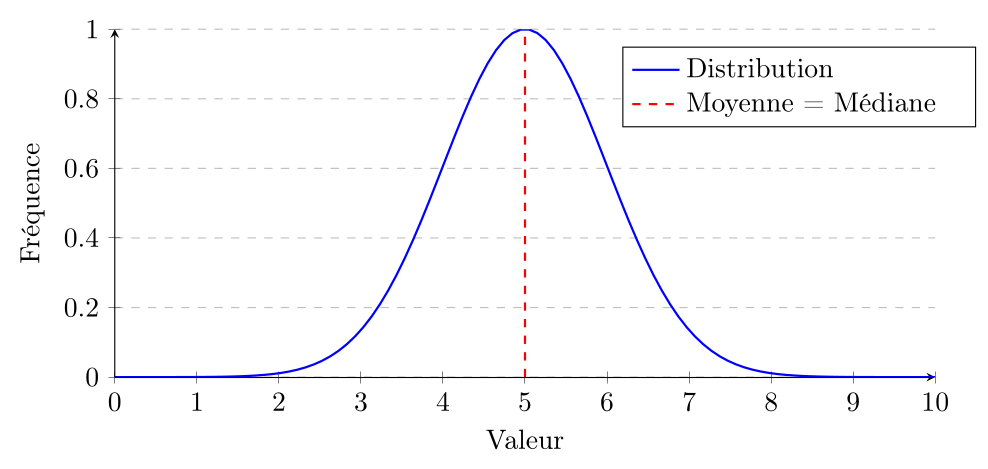
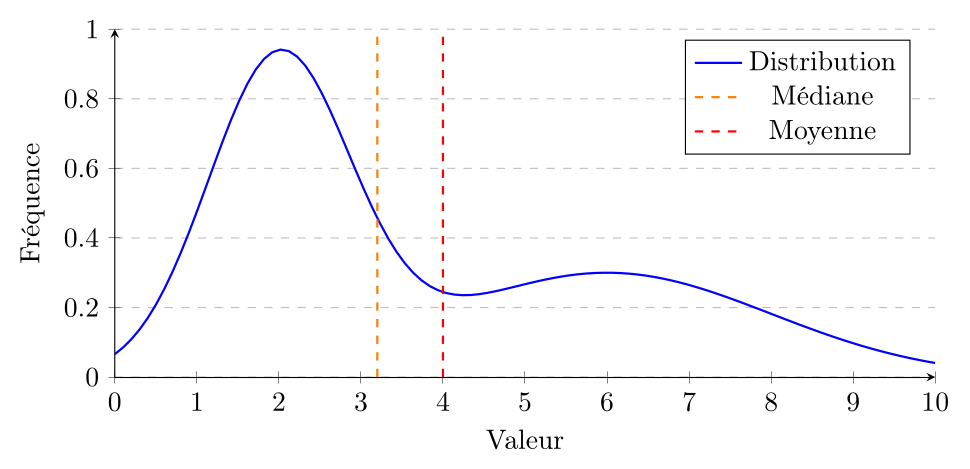
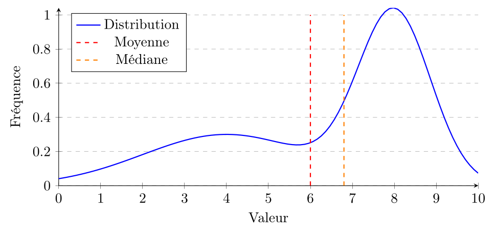
Selon la forme de la distribution et la question d'intérêt, l'un ou l'autre des mesures de tendance centrale peut être plus appropriée. Par exemple, pour une distribution symétrique, la moyenne est souvent utilisée car elle est plus facile à manipuler mathématiquement et a des propriétés algébriques utiles. Cependant, pour une distribution asymétrique ou en présence de valeurs extrêmes, la médiane peut être une meilleure mesure de tendance centrale car elle est plus représentative de la "typicalité" des données. Le mode est particulièrement utile pour les variables nominales ou pour identifier les catégories les plus fréquentes dans une distribution.
| Situation | Mesure recommandée |
|---|---|
| Distribution symétrique | Moyenne (toutes les mesures sont similaires) |
| Distribution asymétrique | Médiane (plus représentative) |
| Présence de valeurs extrêmes | Médiane (robuste) |
| Variables nominales | Mode (seule mesure applicable) |
| Variables ordinales | Médiane ou mode |
| Analyses mathématiques | Moyenne (propriétés algébriques) |
IV.2 Mesures de dispersion
Les mesures de tendance centrale décrivent où se situe le "centre" des données, mais elles ne donnent pas d'information sur la façon dont les données sont réparties autour de ce centre. Pour cela, on utilise des mesures de dispersion qui quantifient l'étalement des données. On ne peut appliquer des mesures de dispersion qu'aux variables quantitatives, car les variables nominales et ordinales n'ont pas de sens en termes de distance entre les valeurs.
IV.2.1 Minimum, maximum, étendue
Le minimum d'une série de données est la plus petite valeur de la série, tandis que le maximum est la plus grande valeur. On les note respectivement $\min\{x_i\mid i=1,\ldots,n\}$ et $\max\{x_i\mid i=1,\ldots,n\}$.
Bien sûr, si on a affaire à un recensement au lieu d'un échantillon, on peut remplacer $n$ par $N$ dans les notations.
Le maximum et le minimum sont eux-mêmes des mesures intéressantes de la série de données car elles permettent de la situer. Cependant, en termes de dispersion, avec le minimum et le maximum, on peut calculer l'étendue de la série de données :
L'étendue d'une série de données est la différence entre la valeur maximale et la valeur minimale :
$$\text{Étendue} = \max\{x_i\mid i=1,\ldots,n\} - \min\{x_i\mid i=1,\ldots,n\}.$$
La notation pour l'étendue n'est pas aussi standardisée que pour les mesures suivantes, mais elle est souvent notée $E$ ou $R$ (pour "range" en anglais).
Comme avant, si on a affaire à un recensement au lieu d'un échantillon, on peut remplacer $n$ par $N$ dans la formule.
La mesure de l'étendue est très simple à calculer et à comprendre, mais elle transmet peu d'information sur la distribution des données, car elle ne prend en compte que les valeurs extrêmes. Par exemple, si on a les données suivantes : 1, 2, 3, 4, 5, l'étendue est de 4 (5 - 1). Si on ajoute une valeur extrême à ces données, par exemple 100, l'étendue devient 99 (100 - 1), même si la majorité des données sont toujours concentrées entre 1 et 5.
Interprétation de l'étendue
L'étendue peut être interprétée comme la "largeur" de la distribution des données. Elle indique la taille de l'intervalle dans lequel se trouvent toutes les observations, du minimum au maximum. Cependant, elle ne donne pas d'information ni sur la position de l'intervalle, ni sur la répartition des données à l'intérieur de cet intervalle. Si on connait une donnée $x$ et qu'on sait que l'étendue est $E$, on sait que les données se trouvent dans l'intervalle $[x - E, x + E]$. L'étendue est importante dans les situations où on accorde une importance particulière aux valeurs extrêmes, comme dans les applications où la vie ou la sécurité sont en jeu. Par exemple, si vous construisez un ascenseur, vous devez vous assurer que la charge maximale supportée par l'ascenseur est suffisante pour supporter le poids de tous les passagers, et pas seulement du passager moyen.
Elle est d'autant plus utile que les données sont proches d'avoir une distribution uniforme, c'est-à-dire que les données sont réparties de manière relativement égale entre la valeur minimale et la valeur maximale. Dans ce cas, l'étendue peut donner une bonne indication de la dispersion des données.
IV.2.2 Écart moyen
L'écart moyen d'une série de données est la moyenne des distances absolues entre chaque valeur et la moyenne de la série :
$$ s_1 = \frac{1}{n}\sum_{i=1}^{n} |x_i - \bar{x}| $$
En d'autres termes, c'est la moyenne de l'écart absolu de chaque donnée par rapport à la moyenne.
Si on a un recensement, on remplace $n$ par $N$ et $\bar{x}$ par $\mu$ dans la formule.
Bien que cette mesure soit une idée "naturelle" de dispersion, elle est rarement utilisée en pratique, car elle ne possède pas de propriétés mathématiques aussi utiles que la variance et l'écart-type. Elle est donc assez peu utilisée. En termes d'interprétation, plus elle est grande, plus on peut considérer que les données sont dispersées autour de la moyenne. Contrairement à la variance et à l'écart-type que nous allons voir ensuite, l'écart moyen accorde la même "importance" à tous les écarts : la série de données
$$10,0,0,0,0,0,0,0,0,0$$
a un écart moyen de 1.8, de même que la série
$$4,0,4,0,4,0,4,0,3,1$$
mais intuitivement la seconde est plus "resserrée" autour de sa moyenne que la première.
IV.2.3 Variance et écart-type
Si on a affaire à une population de taille $N$ et de moyenne $\mu$, la variance de la population est définie par :
$$\sigma^2 = \frac{1}{N}\sum_{i=1}^{N} (x_i - \mu)^2$$
Si on a affaire à un échantillon de taille $n$ et de moyenne $\bar{x}$, la variance de l'échantillon est définie par :
$$s^2 = \frac{1}{n-1}\sum_{i=1}^{n} (x_i - \bar{x})^2$$
Notez, et c'est très important, que la formule de la variance de l'échantillon utilise $n-1$ au lieu de $n$ dans le dénominateur. C'est ce qu'on appelle la correction de Bessel, et elle est nécessaire pour obtenir une estimation non biaisée de la variance de la population à partir d'un échantillon. En effet, si on utilisait $n$ au lieu de $n-1$, on sous-estimerait systématiquement la variance de la population, surtout pour les petits échantillons. On en fera un exemple en labo.
L'écart-type est la racine carrée de la variance :
$$\sigma = \sqrt{\sigma^2}\qquad \text{ et } \qquad s = \sqrt{s^2}$$
L'écart-type est plus facile à interpréter que la variance, car il est exprimé dans les mêmes unités que les données d'origine. Par exemple, si les données sont des poids en kilogrammes, l'écart-type sera également en kilogrammes, ce qui facilite la compréhension de la dispersion des données par rapport à la moyenne.
Que représente l'écart-type ? Vous savez que la distance entre deux points $(x_1, y_1)$ et $(x_2, y_2)$ dans un plan est donnée par le théorème de Pythagore :
$$ d = \sqrt{(x_2 - x_1)^2 + (y_2 - y_1)^2}. $$
Il n'y a pas de raison de se contenter de deux coordonnées et on peut mesurer la distance entre la distribution observée des $x_i$ et la distribution constante égale à la moyenne :
$$d = \sqrt{\sum_{i=1}^{n} (x_i - \bar{x})^2} \quad \text{ ou, selon le cas, } N, \mu.$$
Cependant, intuitivement, on a envie de dire que l'ensemble de données $(0, 20, 20, 0)$ est plus loin de sa moyenne (10) que l'ensemble de données $(9, 11, 11, 9, 9, \ldots, 11)$ (200 fois 9 et 200 fois 11). Pourtant, si on fait le calcul pour la première série de données, on trouve :
$$d = \sqrt{(0-10)^2 + (20-10)^2 + (20-10)^2 + (0-10)^2} = \sqrt{400} = 20.$$
Pour la deuxième série de données, on trouve :
$$d = \sqrt{200 \times (9-10)^2 + 200 \times (11-10)^2} = \sqrt{400} = 20.$$
On voit que les deux séries de données sont à la même distance "brute" de leur moyenne. Pourtant, intuitivement, les 9 et 11 sont tous plus proches de la moyenne que les 0 et 20. C'est pour cela qu'on divise par $n-1$ ou $N$ : pour normaliser la distance entre les données et la moyenne et la rendre indépendante du nombre d'observations, plutôt que de calculer la distance totale.
Une autre manière de voir est de dire que le carré dans la formule pénalise beaucoup plus les écarts importants que les écarts faibles. Par exemple, un écart de 10 contribue à la variance pour 100 (10 au carré), tandis qu'un écart de 1 ne contribue que pour 1 (1 au carré) car un grand écart nous éloigne plus de la moyenne que plusieurs petits écarts.
Interprétation de l'écart-type
L'écart-type mesure la concentration des données autour de la moyenne. Plus l'écart-type est faible, plus les données sont proches de la moyenne. Inversement, un écart-type élevé indique que les données sont dispersées autour de la moyenne. Ce qui est toujours vrai, c'est que si les données ont une moyenne $\mu$ et un écart-type $\sigma$, alors au moins 75 % (3/4) des données se trouvent dans l'intervalle $[\mu - 2\sigma, \mu + 2\sigma]$, au moins 89 % (8/9) des données se trouvent dans l'intervalle $[\mu - 3\sigma, \mu + 3\sigma]$, et au moins 93,75 % (15/16) des données se trouvent dans l'intervalle $[\mu - 4\sigma, \mu + 4\sigma]$, etc. On appelle cela l'inégalité de Bienaymé-Chebychev.
Si on sait plus de choses sur la distribution des données, on peut renforcer ces estimations. Par exemple, dans le cas d'une distribution normale, que l'on étudiera plus précisément plus loin, on a la règle suivante : environ 68 % des données se trouvent dans l'intervalle $[\mu - \sigma, \mu + \sigma]$, environ 95 % des données se trouvent dans l'intervalle $[\mu - 2\sigma, \mu + 2\sigma]$, et environ 99,7 % des données se trouvent dans l'intervalle $[\mu - 3\sigma, \mu + 3\sigma]$.
On reprend les données de l'exemple 10 sur le nombre de voitures par foyer. On a calculé que la moyenne du nombre de voitures par foyer est de 1,51. On peut calculer l'écart-type de cette distribution à partir des données du tableau :
| Nombre de voitures | Nombre de foyers | Fréquence | Pourcentage |
|---|---|---|---|
| 0 | 150 | 0,15 | 15 % |
| 1 | 400 | 0,40 | 40 % |
| 2 | 300 | 0,30 | 30 % |
| 3 | 100 | 0,10 | 10 % |
| 4 | 40 | 0,04 | 4 % |
| 5 | 10 | 0,01 | 1 % |
| Total | 1000 | 1,00 | 100 |
On peut calculer la variance de l'échantillon à partir des données du tableau. On calcule d'abord la somme des carrés des écarts à la moyenne :
$$ \begin{aligned} &(0-1,51)^2 \cdot 150 + (1-1,51)^2 \cdot 400 + (2-1,51)^2 \cdot 300\\ +\ &(3-1,51)^2 \cdot 100 + (4-1,51)^2 \cdot 40 + (5-1,51)^2 \cdot 10\\ =\ &342,0 + 104,0 + 72,0 + 222,0 + 248,0 + 121,8 \mathbf{{}= 1109,8} \end{aligned} $$
Puis pour calculer la variance, on divise par $n-1 = 999$ :
$$s^2 = \frac{1109,8}{999} \approx 1,11$$
Enfin, pour calculer l'écart-type, on prend la racine carrée de la variance :
$$s = \sqrt{1,11} \approx 1,05$$
En regardant la distribution dans le tableau, on voit que la majorité de l'écart-type vient des foyers à 0 et 3 voitures : chaque foyer dans ces classes contribue environ 2,25 à la somme des carrés, contre environ 0,25 pour les foyers à 1 ou deux voitures, soit 5 fois moins. Chaque foyer à 4 ou 5 voitures contribue encore plus individuellement, mais il y en a beaucoup moins, donc leur contribution totale est plus faible que celle des foyers à 0 ou 3 voitures.
Comme pour la moyenne, si on a accès à un tableau de fréquences plutôt qu'aux données brutes, on peut calculer la variance et l'écart-type à partir des données du tableau en pondérant chaque écart au carré par la fréquence de la classe correspondante.
La mesure d'une variable dans un échantillon de $n$ unités statistiques donne une série de $k$ valeurs $x_1, x_2, \ldots, x_k$ avec des effectifs respectifs $n_1, n_2, \ldots, n_k$ de sorte que $n = \sum_{i=1}^k n_i = n_1 + n_2 + \cdots + n_k$. On rappelle que la fréquence relative de la valeur $x_i$ est $f_i = \frac{n_i}{n}$. On calcule la moyenne $\bar{x}$ de la série à partir des données du tableau, puis on calcule l'écart-type $s$ de la série à partir de la formule suivante :
$$s^2 = \frac{1}{n-1}\sum_{i=1}^{k} n_i (x_i - \bar{x})^2 \qquad \text{ et } \qquad s^2 = \frac{n}{n-1}\sum_{i=1}^{k} f_i (x_i - \bar{x})^2.$$
Si on a affaire à un recensement au lieu d'un échantillon, avec $N$ au lieu de $n$, $\mu$ au lieu de $\bar{x}$ et comme avant des effectifs $n_i$ et fréquence relative $n_i/N$, on a :
$$\sigma^2 = \frac{1}{N}\sum_{i=1}^{k} n_i (x_i - \mu)^2 \qquad \text{ et } \qquad \sigma^2 = \sum_{i=1}^{k} f_i (x_i - \mu)^2.$$
Notez une importante différence entre les formules de la moyenne et de l'écart-type à partir des données du tableau : dans le cas d'un échantillon, on divise par $n-1$ pour obtenir la variance. Or, la fréquence relative $f_i$ est déjà divisée par $n$, donc pour obtenir la variance, on doit remplacer ce $n$ par un $n-1$ : on multiplie donc par $n/(n-1)$. Dans le cas d'un recensement, on divise par $N$ pour obtenir la variance, et la fréquence relative est déjà divisée par $N$, donc on n'a pas besoin de faire de correction de Bessel : on peut simplement utiliser les fréquences relatives dans la formule de la variance.
IV.2.4 Coefficient de dispersion
Si on ne connait pas la moyenne d'une distribution, il est difficile d'apprécier si un écart-type de 10 est grand ou petit par rapport à ce que l'on mesure. Par exemple, si en pesant 1000 éléphants, je trouve une moyenne de 5000 kg et un écart-type de 10 kg, alors je peux conclure que les éléphants sont très similaires en poids. En revanche, si je pèse des souris et que je trouve une moyenne de 15g et un écart-type de 10 g, même si l'écart-type est plus petit en termes absolus, il est en réalité très grand par rapport à la moyenne, ce qui signifie que les souris sont très différentes en poids. C'est pour cela qu'on utilise le coefficient de dispersion, qui est le rapport entre l'écart-type et la moyenne :
Le coefficient de dispersion d'une série de données est le rapport entre l'écart-type et la moyenne :
$$CD = \frac{\sigma}{\mu} \quad \text{ ou } \quad CD = \frac{s}{\bar{x}}$$
On l'appelle aussi écart-type relatif ou coefficient de variation et on l'exprime généralement en pourcentages.
Attention : le coefficient de dispersion n'est pas défini si la moyenne est nulle, et il peut être trompeur si la moyenne est très proche de zéro, car dans ce cas, même un petit écart-type peut donner lieu à un coefficient de dispersion très élevé.
Il est possible que le coefficient de dispersion soit supérieur à 100 %, ce qui signifie que l'écart-type est plus grand que la moyenne, et que les données sont très dispersées par rapport à la moyenne, voire qu'il soit négatif si la moyenne l'est. Par exemple, si on a une moyenne de 10 et un écart-type de 15, le coefficient de dispersion est de 150 %, ce qui indique une grande variabilité des données par rapport à la moyenne.
Dans l'exemple précédent, le coefficient de dispersion de cette distribution est de $\dfrac{1,05}{1,51} \approx 0,69$, ce qui indique que l'écart-type est environ 69 % de la moyenne, suggérant une variabilité modérée du nombre de voitures par foyer.
Interprétation du coefficient de dispersion
On se place dans le cas où la moyenne $\mu$ de la population est non nulle. La valeur intéressante à interpréter est en fait la valeur absolue3 du coefficient de dispersion, car le signe du coefficient de dispersion n'a pas de signification particulière : il peut être négatif si la moyenne est négative, et positif si la moyenne est positive, mais cela ne dit rien sur la dispersion des données. En revanche, plus la valeur absolue du coefficient de dispersion est élevée, plus les données sont dispersées par rapport à la moyenne. Par exemple, un coefficient de dispersion de 50 % indique que l'écart-type est égal à la moitié de la moyenne, ce qui suggère une variabilité modérée des données. Un coefficient de dispersion de 200 % indique que l'écart-type est deux fois plus grand que la moyenne, ce qui suggère une grande variabilité des données.
Le coefficient de dispersion a une application utile pour mesurer la fidélité d'une mesure. Imaginons que l'on veut mesurer un paramètre $\rho$ d'une population et qu'on a deux méthodes d'estimation A et B que l'on applique plusieurs fois chacune pour obtenir des estimations $r^A_1, r^A_2, \ldots, r^A_n$ et $r^B_1, r^B_2, \ldots, r^B_n$. On peut alors calculer le coefficient de dispersion pour chaque méthode et comparer leur fidélité : celle des deux qui a le plus petit coefficient de dispersion est la plus fidèle, car elle donne des estimations plus proches les unes des autres.
IV.2.5 Côte $z$
Là où le coefficient de dispersion permet de comparer la dispersion de différentes distributions, la côte $z$ permet de comparer la position d'une donnée par rapport à la moyenne dans différentes distributions et de répondre par exemple à la question "si on considère les premiers de classes des classes A et B, lequel est le plus au dessus de son groupe ?". Ce n'est pas aussi évident que de calculer sa note moins la moyenne de sa classe : par exemple, si dans les classes A et B la moyenne est de 75 % et que les premiers ont 100 %, mais que dans la classe A, 80 % des notes sont entre 70 % et 80 %, alors que dans la classe B, 80 % des notes sont entre 50 % et 100 %, alors intuitivement, le premier de la classe A est plus au dessus de sa classe que le premier de la classe B, même si les deux ont la même note.
La côte $z$ d'une donnée $x_i$ est le nombre d'écarts-types que $x_i$ se trouve au-dessus ou en dessous de la moyenne. Dans le cas d'un échantillon, la côte $z$ de $x_i$ est donnée par :
$$z_i = \frac{x_i - \bar{x}}{s}$$
Dans le cas d'une population, la côte $z$ de $x_i$ est donnée par :
$$z_i = \frac{x_i - \mu}{\sigma}$$
Si on reprend encore l'exemple des voitures par foyer, on a calculé que la moyenne est de 1,51 et l'écart-type est de 1,05. La côte $z$ d'un foyer qui a 5 voitures est donnée par :
$$z = \frac{5 - 1,51}{1,05} \approx 3,33$$
Cela signifie que ce foyer se trouve à environ 3,33 écarts-types au-dessus de la moyenne du nombre de voitures par foyer dans la population étudiée.
Au contraire, la côte $z$ d'un foyer qui n'a pas de voiture est donnée par :
$$z = \frac{0 - 1,51}{1,05} \approx -1,44$$
Interprétation de la côte $z$
La côte $z$ permet de parler de la position d'une donnée par rapport à la moyenne en termes de nombre d'écarts-types. Comme vous le voyez dans l'exemple ci-dessus, une côte $z$ négative indique que la donnée se trouve en dessous de la moyenne, tandis qu'une côte $z$ positive indique que la donnée se trouve au-dessus de la moyenne. Plus la valeur absolue de la côte $z$ est grande, plus la donnée est éloignée de la moyenne en termes d'écarts-types. Par exemple, si une donnée a une côte $z$ de 2, et qu'on sait que la moyenne est 8,5 et l'écart-type est 1,3, alors on sait que la donnée se trouve à 2 écarts-types au-dessus de la moyenne, soit à $8,5 + 2 \times 1,3 = 11,1$. De même, si une donnée a une côte $z$ de $-1,5$, alors on sait que la donnée se trouve à 1,5 écarts-types en dessous de la moyenne, soit à $8,5 - 1,5 \times 1,3 = 6,55$. La côte $z$ est particulièrement utile pour comparer des données provenant de distributions différentes, car elle standardise les données en les exprimant en termes d'écarts-types par rapport à leur propre moyenne.
La côte $z$ n'est en général pas une information suffisante pour connaitre la position d'une donnée dans la distribution, car elle ne dit pas quelle proportion des données se trouve au-dessus ou en dessous de cette côte $z$. Cependant, on verra dans la suite du cours que quand on a une distribution normale, ce qui est souvent le cas, la côte $z$ d'une donnée permet de déterminer exactement quelle proportion des données se trouve au-dessus ou en dessous de cette donnée.
Pour déterminer l'admission à l'université, avant 1995, on utilisait la côte $z$ au Québec. Cela a l'avantage de permettre la comparaison de candidats notés par différents enseignants : on ne considère pas la note absolue, mais seulement à quel point on est au-dessus ou en dessous de la moyenne de la classe ou du groupe.
Cependant, si un groupe est plus fort que les autres, il y aura par nécessité des étudiants avec une faible côte $z$ qui risquent de ne pas être admis alors qu'ils auraient pu être premiers de leur classe dans un autre groupe plus faible. C'est pourquoi, depuis 1995, on utilise la côte $R$, qui transforme la côte $z$ pour prendre en compte la force du groupe de candidats. La côte $R$ d'un candidat ayant une côte $z$ notée $Z$ est donnée par la formule suivante :
$$R = (Z + IFGZ + 5) \times 5$$
où $IFGZ$ est l'indice de force du groupe, qui est calculé à partir des résultats à l'examen ministériel du secondaire et prend ses valeurs dans $[-2, 2]$. Depuis 2017, on ajoute également un terme $IDGZ$ qui prend en compte l'homogénéité du groupe :
$$R = (Z \cdot IDGZ + IFGZ + 5) \times 5$$
IV.3 Mesures de position
On connait déjà une mesure de position : la médiane. C'est une mesure de position au sens où si on connait la médiane, on peut dire si une unité statistique se situe dans la moitié haute ou basse de la distribution.
On en a également évoqué deux autres : le minimum et le maximum, qui encadrent la distribution.
Cependant, il existe d'autres mesures de position qui permettent de diviser la distribution en plus de deux parties égales, ou qui permettent de classer les données selon leur rang.
IV.3.1 Quantiles
Les quantiles sont des valeurs qui divisent une distribution ordonnée en parties égales. Le $p$-ième quantile est la valeur en dessous de laquelle se trouve une proportion $p$ des données. Les quantiles les plus couramment utilisés sont :
-
Les quartiles (pour quart) ($Q_1, Q_2, Q_3$) : divisent la distribution en quatre parties égales. $Q_1$ est la plus petite valeur en dessous de laquelle se trouve 25 % (1/4) des données, $Q_2$ est la médiane (50 %), et $Q_3$ est la plus petite valeur en dessous de laquelle se trouve 75 % (3/4) des données.
-
Les déciles ($D_1, D_2, \ldots, D_9$) : divisent la distribution en dix parties égales. Le $i$-ième décile est la plus petite valeur en dessous de laquelle se trouve $10i\%$ des données.
-
Les centiles ($C_1, C_2, \ldots, C_{99}$) : divisent la distribution en cent parties égales. Le $i$-ième centile est la plus petite valeur en dessous de laquelle se trouve $i\%$ des données.
Légèrement moins fréquemment, on peut aussi trouver des quantiles qui divisent la distribution en 5 parties égales (quintiles, notés $V_1, V_2, V_3, V_4$, $V$ pour 5 en chiffres romains) ou en 20 parties égales (vingtiles), mais les quartiles, déciles et centiles sont de loin les plus couramment utilisés.
La méthode générale pour déterminer les quantiles d'une série de données est la suivante (expliquée ici pour un échantillon). Supposons que nous voulons trouver le $p$-ième quantile (par exemple, $Q_3$) d'une série de $n$ (par exemple, $n = 10$) données $x_i$ :
-
Ordonner les données du plus petit au plus grand : $x_{1} \leq x_{2} \leq \ldots \leq x_{n}$
-
Calculer la position du $p$-ième quantile par la formule : $k = p \times n$ (par exemple, pour $Q_3$, $p = 0.75$, donc $k = 0.75 \times 10 = 7.5$).
-
Si $k$ est un entier, alors le $p$-ième quantile est la moyenne des valeurs à la position $k$ et à la position $k+1$ dans la série ordonnée : $Q_p = \dfrac{x_{k} + x_{k+1}}{2}$.
-
Si $k$ n'est pas un entier, alors le $p$-ième quantile est la $\lceil k \rceil$-ième4 valeur. Dans notre exemple, $k = 7.5$, donc $Q_3 = x_{8}$.
Attention : Contrairement à la médiane, on utilise bien $n$ dans la formule de la position du quantile, et non pas $n+1$.
Supposons que nous avons les notes suivantes de 15 étudiants à un examen :
Calculons le $3^e$ décile $D_3$ :
-
Les données sont déjà ordonnées : $x_1 = 45$, $x_2 = 52$, $\ldots$, $x_{15} = 97$
-
Position du $3^e$ décile : $k = 0.3 \times 15 = 4.5$
-
Comme $k = 4.5$ n'est pas un entier, on prend la $5^e$ valeur : $D_3 = x_5 = 65$
Ainsi, $D_3 = 65$ signifie qu'au moins 30 % des étudiants ont obtenu une note inférieure ou égale à 65.
Une représentation des quartiles : la boîte à moustache. Une boîte à moustaches (ou diagramme en boîte) représente visuellement les quartiles d'une distribution. La boîte centrale s'étend de $Q_1$ à $Q_3$ et contient donc 50 % des données. La ligne à l'intérieur représente la médiane $Q_2$. Les "moustaches" s'étendent jusqu'aux valeurs minimale et maximale, montrant l'étendue complète des données.
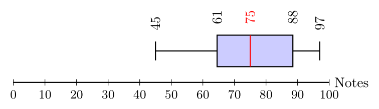
Typiquement, on n'écrit pas les valeurs des quartiles, minimum, maximum et de la médiane sur le diagramme en boîte, mais on les ajoute ici pour faciliter l'interprétation. Dans ce diagramme, on voit que la majorité des notes se trouvent entre 61 et 88, avec une médiane à 75, ce qui indique que la moitié des étudiants ont obtenu une note inférieure ou égale à 75. Les moustaches montrent que les notes s'étendent de 45 à 97, indiquant une certaine dispersion des résultats.
Une mesure de dispersion autour de la médiane : l'écart interquartile.
L'écart interquartile (qu'on note ici EIQ, mais attention, ce n'est pas une notation universelle) est une mesure de dispersion qui indique l'étendue de la partie centrale d'une distribution. Il est calculé en soustrayant le premier quartile $Q_1$ du troisième quartile $Q_3$ :
L'écart interquartile (EIQ) d'une série de données est la différence entre le troisième quartile $Q_3$ et le premier quartile $Q_1$ :
$$EIQ = Q_3 - Q_1$$
Contrairement à l'écart-type, qui mesure la dispersion autour de la moyenne, l'écart interquartile mesure la dispersion autour de la médiane. Il est particulièrement utile pour les distributions asymétriques ou contenant des valeurs extrêmes (outliers), car il n'est pas influencé par ces valeurs extrêmes contrairement à l'écart-type.
Il peut être intéressant de comparer l'écart interquartile à l'étendue. L'EIQ est nécessairement plus petit, mais le rapport entre les deux (EIQ/E) est proche de 1, cela veut dire que la distribution est concentrée près de ses valeurs extrêmes, s'il est proche de 1/2 (et que la médiane est au centre), cela veut dire que la distribution est à peu près homogène et s'il est proche de 0, cela veut dire que la distribution est très concentrée autour de sa médiane.
IV.3.2 Rang quantile
Le rang quantile est, d'une certaine façon, l'opposé du quantile : au lieu de connaitre la proportion de données et de chercher la valeur qui les majore, on connait la valeur et on cherche la proportion de données qu'elle majore. Par exemple, si on sait que $Q_3 = 20$, alors le rang quantile de 20 est 0,75, car 75 % des données sont inférieures ou égales à 20.
Le rang quantile d'une valeur $x$ dans une série de données est la proportion de données qui sont inférieures ou égales à $x$. Il est calculé en ordonnant les données et en déterminant la position de $x$ dans cette série ordonnée. Si $x$ se trouve à la position $k$ dans la série ordonnée, alors le rang quantile de $x$ est donné par la formule : $\text{Rang quantile} = \dfrac{k}{n}$, où $n$ est le nombre total de données.
La définition elle-même donne la méthode :
-
On ordonne les données de la plus petite à la plus grande : $x_{1} \leq x_{2} \leq \ldots \leq x_{n}$
-
On cherche la donnée $x$ : si elle est dans les données, on note $k$ sa position (si elle y est plusieurs fois, on prend la plus grande).
-
Si $x$ n'est pas dans les données, on trouve les deux données $x_{i}$ et $x_{i+1}$ telles que $x_{i} < x < x_{i+1}$, et on note $k = i$. (Si $x$ est plus petit que toutes les données, on prend $k = 0$, et si $x$ est plus grand que toutes les données, on prend $k = n$.)
-
Le rang quantile de $x$ est alors donné par la formule : $\text{Rang quantile} = \dfrac{k}{n}$.
IV.3.3 Lire des quantiles
Dans la majorité des cas, on a besoin de calculer les quantiles (y compris la médiane) ou des rangs quantiles à partir de données déjà traitées, dans des tableaux de fréquences ou des graphes.
Lire des quantiles et des rangs dans un tableau de fréquence. On rappelle que les quantiles ne peuvent être définis que pour une variable au moins ordinale. Ceci étant dit, si on a une modalité, valeur ou classe $v$ d'une variable ordinale, on peut calculer la fréquence cumulée relative5 des données inférieures ou égales à $v$ :
$$F_{\leq v} = \sum_{x_i \leq v} f_i$$
où $f_i$ est la fréquence relative de la valeur $x_i$. Pour trouver le $p$-ième quantile, il suffit de trouver la première valeur (ou modalité, ou classe) $v$ pour laquelle $F_{\leq v} \geq p$. Par exemple, pour trouver la médiane, il suffit de trouver la première valeur $v$ pour laquelle $F_{\leq v} \geq 0{,}5 = 50%$.
Dans le cas d'une variable continue, ou même d'une variable discrète avec un grand nombre de valeurs, il est rare que les tableaux représentent chaque valeur individuellement : dans ce cas, on parle de classe médiane (ou classe quantile).
Reprenons l'exemple du nombre de t-shirts vendus par taille :
| Taille | S | M | L | XL |
|---|---|---|---|---|
| Nombre vendu | 4 | 9 | 5 | 2 |
Il faut d'abord calculer les fréquences relatives et les fréquences relatives cumulées :
| Taille | Effectif | Fréquence relative | Fréquence relative cumulée (%) |
|---|---|---|---|
| S | 4 | 0,20 | 20 % |
| M | 9 | 0,45 | 65 % |
| L | 5 | 0,25 | 90 % |
| XL | 2 | 0,10 | 100 % |
Pour trouver la médiane, il faut trouver la première classe pour laquelle la fréquence relative cumulée est supérieure ou égale à 50 %. Ici, c'est la classe M, donc la médiane est M. Pour trouver le premier quartile (ce qui revient au $25^e$ centile), il faut trouver la première classe pour laquelle la fréquence relative cumulée est supérieure ou égale à 25 %. Ici, c'est aussi la classe M, donc $Q_1 =$ M. De même, pour trouver $Q_3$, il faut trouver la première classe pour laquelle la fréquence relative cumulée est supérieure ou égale à 75 %. Ici, c'est la classe L, donc $Q_3 =$ L.
Inversement, si on a une valeur $v$ et que l'on veut trouver son rang quantile à partir d'un tableau de fréquences cumulées, on a trois cas de figure :
-
soit la valeur $v$ est présente dans le tableau, et alors son rang quantile est simplement la fréquence cumulée relative de cette valeur,
-
soit la valeur $v$ n'est pas une valeur du tableau, mais on peut trouver $v_i$ et $v_{i+1}$ telles que $v_i < v < v_{i+1}$, et on prend comme rang quantile de $v$ la fréquence cumulée relative de $v_i$, c'est-à-dire la proportion de données inférieures ou égales à $v_i$.
-
soit on a une valeur $v$ mais il y a des classes dans les lignes. Dans ce cas, on trouve la classe $C$ telle que $v \in C$, et on prend comme rang quantile de $v$ la fréquence cumulée relative de la classe précédente à $C$, c'est-à-dire la proportion de données inférieures ou égales à la classe précédente à $C$.
Reprenons l'exemple des véhicules du jeu de données mtcars et de leur consommation en miles par gallon (mpg). Supposons que nous avons le tableau de fréquences suivant pour la variable "consommation en mpg" :
| Consommation (mpg) | Nombre de véhicules | Fréquence cumulée des véhicules (%) |
|---|---|---|
| 10-14.99 | 5 | 16 % |
| 15-19.99 | 13 | 56 % |
| 20-24.99 | 8 | 81 % |
| 25-29.99 | 2 | 88 % |
| 30+ | 4 | 100 % |
| Total | 32 | 100 % |
Si je veux trouver le rang quantile de 23 mpg, je vois que 23 est dans la classe 20-24.99, donc je prends la fréquence cumulée relative de la classe précédente, qui est 56 %. Donc le rang quantile de 23 mpg est de 56 %, ce qui signifie que 56 % des véhicules ont une consommation inférieure ou égale à 23 mpg. En effet, vu que les données sont regroupées en classes, on ne sait pas comment se situent les 8 véhicules de la classe 20-24.99, par rapport à 23 mpg : certains peuvent être en dessous de 23, d'autres au dessus. En prenant la fréquence cumulée relative de la classe précédente, on s'assure de ne pas surestimer le rang quantile de 23 mpg.
Il existe des méthodes qui permettent d'estimer les quantiles et les rangs quantiles à partir de données regroupées en classes, mais elles sont plus complexes et nécessitent des hypothèses supplémentaires sur la distribution des données à l'intérieur de chaque classe. Nous n'aborderons pas ces méthodes dans ce cours, mais il est important de savoir qu'elles existent.
Lire des quantiles et des rangs sur une ogive
Puisque la lecture des quantiles et des rangs se fait sur la proportion cumulée, il est naturel que le type de diagramme qui permet de les lire facilement soit l'ogive, qui représente la fréquence cumulée relative en fonction des valeurs de la variable.
-
Lire un quantile. Pour lire le $p$-ième quantile, on trace un trait horizontal à la proportion cumulée relative $p$ sur l'axe des ordonnées. Ce trait croise l'ogive en un point : la valeur du quantile est l'abscisse de ce point.
-
Lire un rang quantile. Pour lire le rang quantile d'une valeur $v$, on trace un trait vertical à la valeur $v$ sur l'axe des abscisses. Ce trait croise l'ogive en un point : le rang quantile de $v$ est l'ordonnée de ce point.
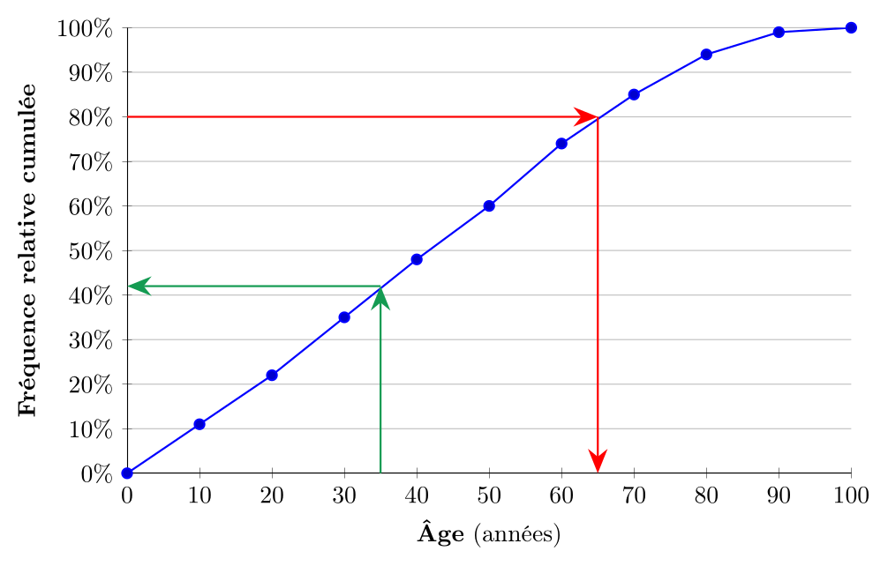
On voit (en rouge), que le $0{,}8^e$ quantile (c'est-à-dire, de façon équivalente : le $4^e$ quintile, le $8^e$ décile ou le $80^e$ centile) de la distribution correspond à une valeur d'environ 65 ans, ce qui signifie que 80 % de la population du Québec a 65 ans ou moins. De même, on voit (en vert), que le rang quantile de 35 ans est d'environ 42%, ce qui signifie que 42% de la population du Québec a moins de 35 ans.
Résumé du chapitre
Trois mesures de tendance centrale
| Mode | Médiane | Moyenne |
|---|---|---|
| Valeur la plus fréquente | Valeur centrale | Somme $\div$ nombre |
| Applicable aux nominales | 50 % au-dessous, 50 % au-dessus | Données quantitatives seulement |
| Peut être non unique | Robuste aux extrêmes | Sensible aux valeurs extrêmes |
| Exemple : couleur préférée | Revenu médian | Moyenne salariale |
Asymétrie de la distribution
| Asymétrie négative | Symétrique | Asymétrie positive |
|---|---|---|
| Moy $<$ Méd | Moy $\simeq$ Méd | Moy $>$ Méd |
Mesures de tendance centrale : quand utiliser chacune?
Mesures de dispersion : Variabilité des données
| Mesure | Interprétation |
|---|---|
| Étendue | Différence entre max et min (sensible aux extrêmes) |
| Écart-type | Distance moyenne des données à la moyenne (unités originales) |
| Variance | Carré de l'écart-type (unités au carré) |
| Écart interquartile (IQR) | Intervalle contenant les 50 % du centre (robuste) |
- Pour information, le revenu familial médian après impôts par personne au Québec en 2022 était de 39 000 \$. ↩
- Source : Statistique Canada, Enquête canadienne sur le revenu (2012-2022) ↩
- La valeur absolue d'un nombre $x$ est $x$ si $x$ est positif et $-x$ s'il est négatif. C'est toujours un nombre positif : c'est la "taille" du nombre, indépendamment de son signe. ↩
- On rappelle que $\lceil x \rceil$ est la partie entière supérieure de $x$, autrement dit, son arrondi par excès à un entier. ↩
- La formule se lit "la fréquence cumulée des modalités/valeurs/classes inférieures ou égales à $v$, notée $F_{\leq v}$ ici, est la somme des fréquences relatives individuelles des modalités/valeurs/classes inférieures ou égales à $v$." ↩